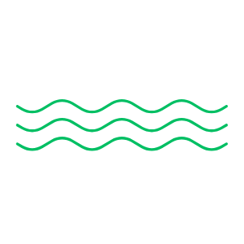

Leylines
Undulating sounds of organic sinewaves.
Mobile: Swipe to change the sound. Double tap to add tones.
Desktop: Click and drag to change the sound. Right click to add tones.
Undulating sounds of organic sinewaves.
Mobile: Swipe to change the sound. Double tap to add tones.
Desktop: Click and drag to change the sound. Right click to add tones.